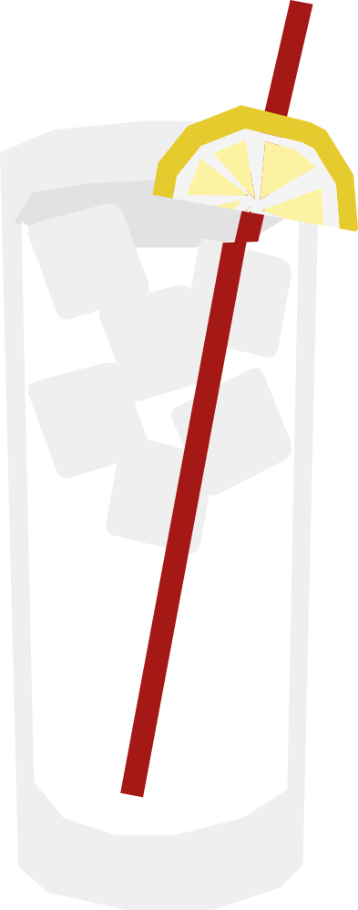

¿Qué tan duro es el concreto?
Creado en los años 70 en Praga combinando Becherovka, un licor de hierbas checo del siglo XIX, con agua tónica. Su nombre ("concreto" en checo) es una broma sobre lo simple y "sólida" que resulta la mezcla.
RECETA
- 40 ml Becherovka
- 100 ml agua tónica
- Hielo en cubos
- Rodaja de limón amarillo
- Llena un vaso con hielo.
- Agrega la Becherovka y completa con agua tónica.
- Mezcla suavemente.
- Decora con una rodaja de limón amarillo.
Vaso: Vaso alto / highball